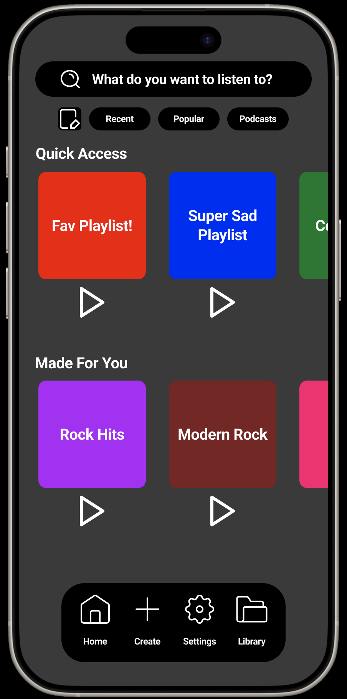
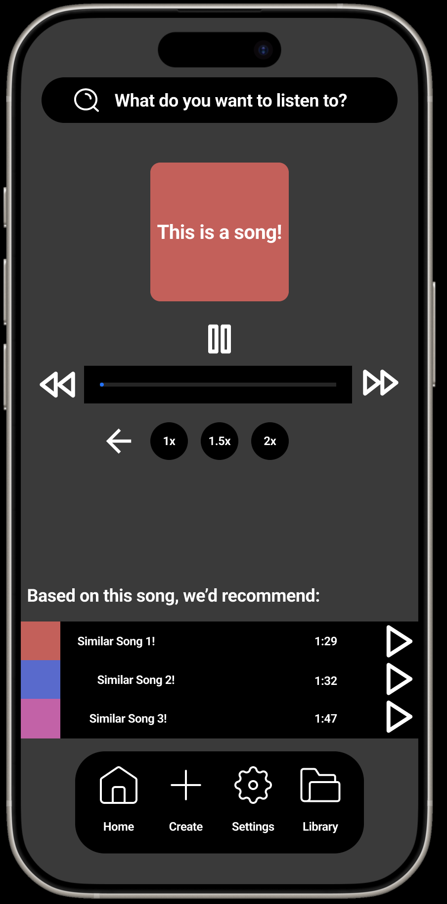
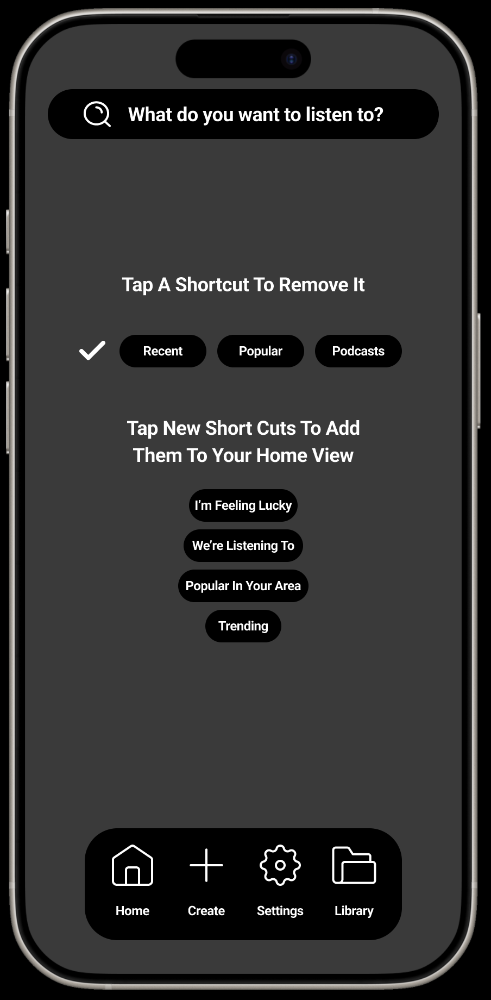

<- Projects / UX / UI Projects
// CSCI 443 was completed December 2024
Course Project {
// This project was completed December 2024
This project was designed around solving a real world problem, putting user experience, and user interaction first. For this proect, I decided to prototype a task tracking app.
}


Final Project {
// This project was completed December 2024
This project required a 5 page paper, and high fidelity prototype on how to improve the UX / UI of Spotify, specifically focusing on user efficiency, effectiveness, and satisfaction. This project had an extremely tight timeline of 48 hours.
}


